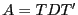

A Manual for use of PyPedal
A software package for pedigree analysis
Previous:
1. Introduction
Up:
1. Introduction
Next:
1.2 Where to get
1.1 Features
Some of the notable features of PyPedal include:
Reading pedigree files in user-defined formats;
Checking pedigree integrity (duplicate IDs, parents younger than offspring, etc.);
Generating summary information such as frequency of appearance in the pedigree file;
Reordering and renumbering of pedigree files, including those with IDs as character strings rather than integers;
Computation of the numerator relationship matrix (
) from a pedigree file using the tabular method;
Inbreeding calculations for large pedigrees (pedigrees up to 600,000 animals have been processed with PyPedal);
Computation of average total and individual coefficients of inbreeding and relationship;
Calculation of coefficients of partial inbreeding using an iterative tabulat method [
Lacy, Alaks, and WalshLacy et al.1996
,
Gulisija, Gianola, Weigel, and ToroGulisija et al.2006
];
Calculation of coefficients of ancestral inbreeding using the methods of Ballou Ballou1997 or Suwanlee et al. SuwanleeBSC2007;
Decomposition of
into
and
such that

;
Computation of the direct inverse of
(not accounting for inbreeding) using the method of Henderson ref143;
Computation of the direct inverse of
(accounting for inbreeding) using the method of Quaas ref235;
Storage of
and its inverse between user sessions as persistent Python objects using the
pickle
module to avoid unnecessary calculations;
Calculation of theoretical and actual effective population sizes;
Computation of effective founder number using the exact algorithm of Lacy ref640;
Computation of effective founder number using the approximate algorithm of Boichard et al. ref352;
Computation of effective ancestor number using the algorithms of Boichard et al. ref352;
Selection of subpedigrees containing all ancestors of an animal;
Identification of the common relatives of two animals;
Calculation of the inbreeding of offspring from a prospective mating;
Output to ASCII text files, including matrices, coefficients of inbreeding and relationship, and summary information;
Importation and exportation of GEDCOM 5.5 files;
Importation and exportation of GENES 1.20 (dBase III) files;
Loading pedigrees from, and saving them to, MySQL, Postgres, and SQLite databases;
Simulation of pedigrees using an algorithm derived from that in Matvec 1.1a;
PyPedal has been used to perform calculations on pedigrees as large as 600,000 animals and has been used in scientific research [
Cole, Franke, and LeightonCole et al.2004
,
ColeCole2007
].
A Manual for use of PyPedal
A software package for pedigree analysis
Previous:
1. Introduction
Up:
1. Introduction
Next:
1.2 Where to get
Release 2.0.3, documentation updated on November 29, 2005
Revised May 15, 2012.
See
About this document...
for information on suggesting changes.